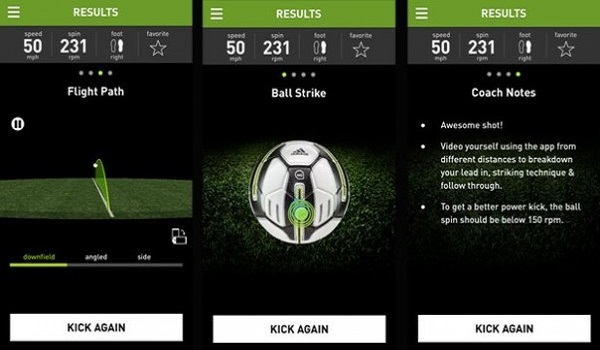

Компания Adidas получила известность в качестве продавца дорогой спортивной формы. Однако, к удивлению некоторых, в этой фирме плодотворно работает и настоящий научно-технический отдел. Он время от времени разрабатывает какую-либо необычную технологию. Новый футбольный мяч Adidas miCoach – из разработок такого толка.Мяч, у которого есть встроенные сенсоры, производит запись информации о том, какова сила удара, траектория полета, как мяч вращается. По заверениям разработчиков гаджета, датчик, который встроен в miCoach Smart Ball, отправляет на Пк или мобильное устройство сведения о скорости, вращении, траектории и точности паса. Благодаря этому футболист может сделать подробный анализ каждого удара. Можно также определить и место, в котором футболист своей ногой коснулся мяча. Все эти сведения можно изучить, чтобы с пользой дела использовать на тренировках. Ведь при этом видны все огрехи в технике.
Мяч пятого размера, который напичкан разной электроникой, как внешне, так и на вес или по ощущениям трудно отличить от обычного мяча. Разницу можно обнаружить только в цене.
Как работает технология «умного» мяча? Мяч имеет 32 панели с термообработкой швов. Его оснастили встроенным датчиком для того, чтобы можно было отрабатывать превосходную технику ударов. Умный мяч чувствуешь при касании точно так же, как обычный мяч.Встроенный датчик способен определять скорость, вращение, силу удара и точность полета. И сразу же передать данные приложению miCoach, используя Bluetooth 4.0. Отметим, что мобильное приложение для работы с miCoach производят только под iOS.
Мяч идеально подходит для того, чтобы выполнять стандартные положения на тренировках. Спортсмен со смартфоном в руке или в очках Google Glass после каждой подачи располагает информацией, полученной по Bluetooth, чтобы ее анализировать. Он знает, с какой силой, с каким вращением и в какое место мяча ударил.
В результате есть полные характеристики, чтобы можно было подать мяч с точностью до сантиметра и с правильной подкруткой. Все удары, то есть угловые, свободные и штрафные по воротам, выполняют по такому же алгоритму. И можно оттачивать технику без участия тренера. Разработчик уверяет, что мяч помогает тренировать удары с носка как по центру мяча, так и без вращения, на скорости более 72 км/ч. Именно такие удары трудно отразить вратарю.

